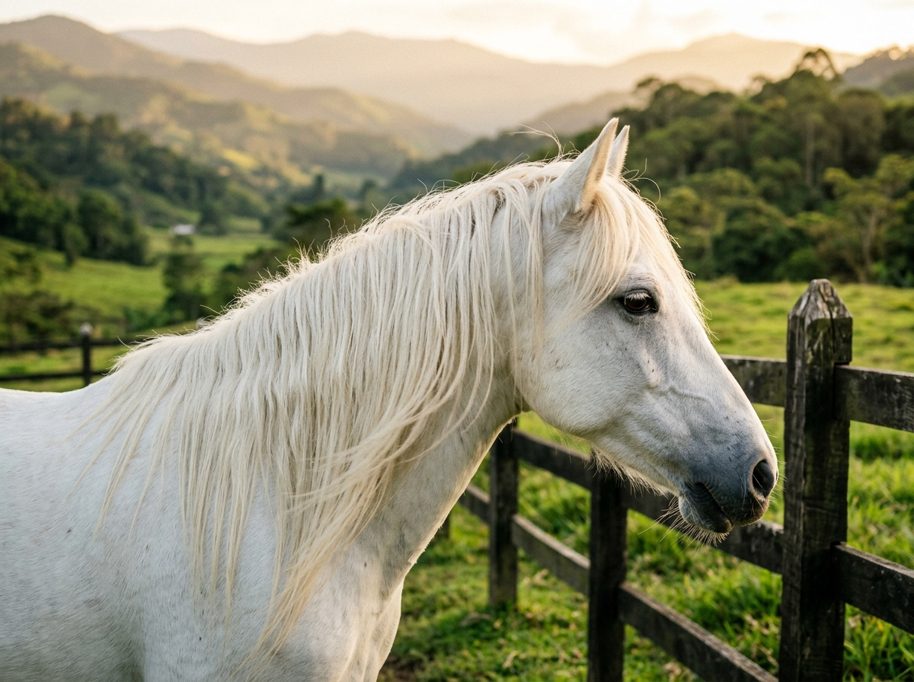

Genética de calidad. Formación con propósito.
Una historia que comenzó con un caballo
y se convirtió en un propósito de vida
Desde las enseñanzas imborrables de nuestro primer caballo profesor hasta la consolidación de un programa de crianza y formación humana. Creemos que cada caballo es un maestro y cada jinete tiene su propio proceso.

Una Pasión que Nació en la Infancia
La historia de La Chucua J.C. comenzó cuando tenía apenas cinco años, cuando mi padre me regaló mi primera yegua: una hermosa yegua pintada que, aunque tenía un carácter particular y no era fácil de montar para un niño, despertó en mí un amor por los caballos que nunca desapareció.
La llegada de Palomo
“Con el tiempo llegó a mi vida Palomo, un hermoso semipony blanco, de largas crines, que se convirtió en mucho más que mi primer caballo. Palomo había sido utilizado anteriormente para dictar clases de chalanería y era, como decimos en el mundo ecuestre, un verdadero caballo profesor.”
Él me enseñó a montar, a confiar, a perder el miedo y a disfrutar de cada momento a caballo. Me acompañó hasta el final de sus días y dejó una huella que permanece hasta hoy.
Con los años comprendí que montar a caballo era mucho más que un deporte. Era mi espacio para desconectarme, recuperar energía, enfrentar mis miedos y encontrar tranquilidad.
En la finca, los montadores que trabajaban los animales también se convirtieron en mis maestros. Allí aprendí a sentir al caballo, a cogerle el pulso, a observarlo y a entender que cada caballo y cada jinete tienen su propio proceso.
Mis padres siempre me enseñaron que debía dedicarme a aquello que realmente me apasionara, pero con una condición: hacerlo y buscar ser el mejor.
El Comienzo de un Sueño
Hace aproximadamente diez años decidí comenzar formalmente mi proyecto con caballos de paso. Empezar no fue fácil. Tuve que realizar grandes sacrificios y comenzar prácticamente desde cero para poder construir el proyecto que soñaba.
“Para saber para dónde vamos, primero debemos saber de dónde venimos.”
Soberana de San Judas
Uno de los ejemplares que marcó este camino fue Soberana de San Judas, una yegua con una línea de gran importancia dentro de la historia del Caballo Criollo Colombiano.
Ilusión · Reproductora
Posteriormente llegaron otros ejemplares y nuevas líneas que fueron enriqueciendo el proyecto, entre ellos Ilusión, una reproductora con generaciones de genética importante y una trayectoria que demostraba el valor de una línea comprobada.
“Cada caballo, cada reproducción, cada acierto y cada error fueron formando lo que hoy conocemos como La Chucua J.C.”
Genética con Propósito
Hoy contamos con ejemplares que representan una parte fundamental de nuestra visión genética, entre ellos Venus del Rancho y Valentina de la Mariana. Cada una representa líneas, características y cualidades que hemos seleccionado cuidadosamente para continuar construyendo una genética de calidad.
Nuestra filosofía no se basa en buscar cantidad.
Buscamos calidad, salud, funcionalidad, temperamento y genética con propósito.
Creemos que criar un caballo es pensar en generaciones futuras. Por eso cada decisión dentro del programa de reproducción tiene una razón y hace parte de una visión a largo plazo.
Nuestro objetivo es aportar al futuro del Caballo Criollo Colombiano, conservando aquello que nos identifica y buscando, generación tras generación, producir animales de calidad.
Venus del Rancho
Matrona de Crianza ActivaSeleccionada por su excelente conformación, aplomos perfectos, brío ordenado y la herencia de líneas tradicionales que potencian la cadencia de la trocha y el paso fino.
Valentina de la Mariana
Línea de Paso & NoblezaEjemplar de estampa distinguida, suavidad al andar y un temperamento colaborador y noble, cualidades indispensables en nuestro programa de reproducción.
Salud Integral
Bienestar físico, nutrición balanceada y aplomos correctos desde el nacimiento.
Funcionalidad
Movimientos naturales, elasticidad, suavidad y cadencia en cada andadura.
Temperamento
Brío manejable, nobleza, inteligencia y disposición receptiva al aprendizaje.
Visión de Futuro
Crianza pensada para generaciones venideras del Caballo Criollo Colombiano.
Del Criadero al Club Ecuestre
Pero nuestra historia no podía quedarse únicamente en la crianza.
Los caballos habían hecho demasiado por mí como para limitar nuestra relación con ellos a la reproducción o al deporte. Ellos me enseñaron a enfrentar mis miedos, a confiar, a ser disciplinado, a tener paciencia y a encontrar tranquilidad.
“¿Y si lo que los caballos hicieron por mí también pudiera ayudar a otras personas?”
De esa pregunta nace el Club Ecuestre La Chucua J.C. Un espacio donde nuestra experiencia con los caballos se convierte en una oportunidad de aprendizaje, crecimiento y desarrollo para niños, jóvenes y adultos.
El Caballo como Compañero de Evolución
En La Chucua J.C. creemos que la vida al lado de un caballo es una vida mejor. El caballo ha acompañado al ser humano durante siglos y ha sido parte fundamental de nuestra evolución. Nos ha ayudado a desplazarnos, trabajar, competir y superar límites.
Pero su aporte también puede ser emocional y educativo. A su lado aprendemos paciencia, disciplina, confianza, responsabilidad y respeto. Aprendemos a observar, a comunicarnos sin palabras y a reconocer nuestras propias emociones.
Saber de Dónde Venimos
para Saber para Dónde Vamos
Esta frase representa nuestra filosofía genética, pero también nuestra filosofía de vida. Así como estudiamos el origen de una línea genética para comprender sus características y decidir hacia dónde queremos llevarla, también debemos aprender a conocernos como personas.
Los Cuatro Temperamentos
Como herramienta de autoconocimiento, nos acercamos al modelo clásico de los cuatro temperamentos. Todos podemos manifestar características de los cuatro, aunque algunas tendencias pueden presentarse con mayor fuerza. No buscamos etiquetar ni diagnosticar a una persona: buscamos comprender mejor nuestra manera de actuar, reaccionar y relacionarnos.
Sanguíneo
Entusiasmo, sociabilidad, expresividad y dinamismo. Con el caballo aprende a canalizar la atención, mantener la constancia y escuchar con calma.
Alegría & ConexiónColérico
Decisión, empuje, liderazgo e iniciativa. Con el caballo aprende a regular la intensidad, trabajar la sutileza en las ayudas y liderar desde la confianza.
Fuerza & AutorregulaciónMelancólico
Sensibilidad, observación detallada, profundidad y empatía. Con el caballo aprende a transformar la duda en seguridad y fluir con el movimiento.
Sensibilidad & ConfianzaFlemático
Calma, serenidad, templanza y paciencia constante. Con el caballo aprende a imprimir energía oportuna, tomar decisiones ágiles y activar el ritmo.
Serenidad & DeterminaciónFrente a un Caballo nos Descubrimos
Frente a un caballo, muchas veces se hacen visibles aspectos de nosotros mismos que no habíamos reconocido. Nuestra seguridad, nuestros miedos, nuestra paciencia, nuestra impulsividad, nuestra capacidad de concentración y nuestra manera de comunicarnos pueden reflejarse en la relación que construimos con él.
Por eso nuestras clases no buscan únicamente enseñar a montar: buscamos que cada persona pueda conocerse, reconocer sus virtudes y trabajar aquello que necesita fortalecer.
“Porque un buen jinete no solamente debe aprender a dirigir un caballo. Debe aprender primero a dirigirse a sí mismo.”
Ven a Conocer La Chucua J.C.
Te invitamos a recorrer nuestras pesebreras, pistas y senderos ecológicos, dialogar con nuestros instructores sobre tu proceso o el de tus hijos, y sentir la conexión con nuestros caballos.